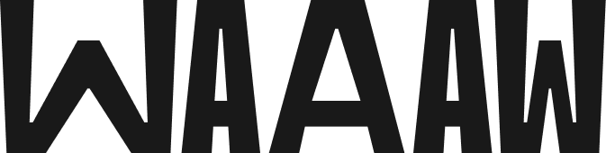
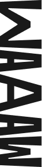
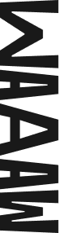

WAAAW — это медиа-сервис о видах
экстремального отдыха. У нас можно
найти статьи, подкасты, чек-листы
и карточки с описанием активностей.

Делиться знаниями и вдохновлять
людей на занятие экстремальными
активностями, преодолевать страхи.

Преодоление себя
Безопасный первый опыт
Полное информирование
Качественная подготовка
Практическая информация
Удобство усвоения материала

Мы заботливый медиа-помощник
для начинающих экстремалов.
Воодушевляем пользователя
на занятие активностями, каждый
раз предлагаем выходить за рамки.
В дерзко-заботливой форме
напоминаем о важных вещах.


Графика и толщина шрифта передают стабильность и уверенность. С помощью различных начертаний и растяжения букв видны динамичность и ритм.
В логотипе содержатся возглас удивления «Wow» и крик «ААА», передающие впечатления людей
от занятия экстримом.


В охранном поле вариативного логотипа узкая «А» является модулем


Представлены все возможные варианты сочетания цветов логотипа с фоном.
1. Основной вариант
3. Дополнительный вариант

2. Дополнительный вариант

Логотип является вариативным. Варианты товарного знака
не зависят от условий и носителей, свободны в использовании.

 
Нельзя модифицировать логотип, изменять и использовать какие-либо другие варианты.
Возможен поворот
логотипа только на 180°


GOLOS
Bold
Аа Бб Вв Гг Дд Ее Ёё
Жж Зз Ии Йй Кк Лл
Мм Нн Оо Пп Рр Сс
Тт Уу Фф Хх Цц Чч
Шш Щщ Ъъ Ыы Ьь
Ээ Юю Яя

0123456789
0123456789
Для заголовков был выбран гротескный статичный шрифт. Для передачи движения
и пластичности некоторые согласные выборочно вытягиваются.

Navigo
Medium
Regular
Аа Бб Вв Гг Дд Ее Ёё
Жж Зз Ии Йй Кк Лл
Мм Нн Оо Пп Рр Сс
Тт Уу Фф Хх Цц Чч
Шш Щщ Ъъ Ыы Ьь
Ээ Юю Яя
Аа Бб Вв Гг Дд Ее Ёё
Жж Зз Ии Йй Кк Лл
Мм Нн Оо Пп Рр Сс
Тт Уу Фф Хх Цц Чч
Шш Щщ Ъъ Ыы Ьь
Ээ Юю Яя
0123456789
0123456789


В элементы айдентики
входят фирменные иконки, вдохновленные элементами навигации. С их помощью мы “направляем” пользователя, указываем на информацию, которую они содержат.

Иконки запрещается растягивать и как-либо деформировать. На носителях они должны быть строго меньше логотипа.


Значки-стрелочки могут быть покрашены в любой фирменный цвет.
Значки-искры только
в фирменный оранжевый.


Прямоугольники с обводной используются
в качестве подложки под текст или фирменную графику. Напоминают форму календарей.


Паттерн создан с помощью добавления букв разных начертаний из шрифта
TT Trailers, которым был набран логотип.


Внутри прямоугольных форм располагаются фотографии
без фона и в фирменной палитре.


Сетка состоит из 12 колонок. Элементы могут располагаться на странице в соотношениях 1:1, 2:1, 3:1 и наоборот.


HSE ADC
Софья Каем
Анна Комкова
Яна Глухова
Диана Пшенникова